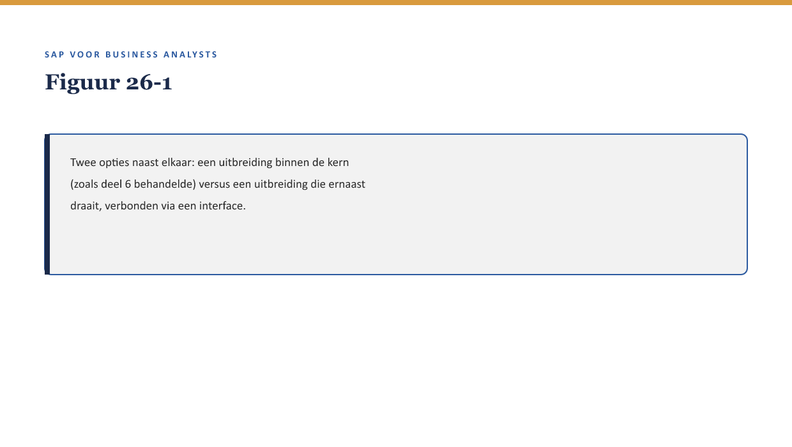

Cursus SAP voor Business Analysts · Niveau 3 (Expert) · Deel 26 van 30
BTP & extensibility
Deel 1 (niveau 1) noemde “keep the core clean” terloops, zonder uitwerking. Priya haalt het nu naar voren: “Elke uitbreiding die je in de kern van FS-PM bouwt, maakt een toekomstige update lastiger. Er is een andere manier.”
11secties
±30minleestijd + werkboek
6werkboekopdrachten
2figuren
Positionering. Deze Ductus-opleiding leert business analisten SAP zelfstandig lezen en beoordelen in een SAP-implementatietraject — geen configuratie- of programmeercursus, wel de vaardigheid om een consultant en ontwikkelaar te kunnen tegenspreken. Dit materiaal is onafhankelijk ontwikkeld door Ductus B.V. en niet gelieerd aan of goedgekeurd door SAP SE.
Niveau 3: Deel 23 — S/4HANA for Insurance: wat verandert er → Deel 24 — Case: een proces implementeren → Deel 25 — Debugging & runtime-analyse → Deel 26 — BTP & extensibility (hier) → Deel 27 — IFRS17/FPSL: de samenvatting → Deel 28 — Wtp als toepassingslaag → Deel 29 — Governance & auditeerbaarheid → Deel 30 — Masterproef
01
Leerdoelen
⏱ 3 min
Na dit deel kun je:
het begrip “keep the core clean” (↗ deel 1 §3.2, terloops genoemd) uitleggen: waarom uitbreidingen bij voorkeur buiten de kern worden gehouden;
side-by-side extensions op hoofdlijnen beschrijven als moderner alternatief voor user exits/BAdI’s (↗ deel 6 §4);
de Business Technology Platform (BTP) plaatsen als het platform waarop zulke uitbreidingen draaien;
beoordelen wanneer side-by-side extensibility een goede optie is versus een klassieke uitbreiding binnen het kernsysteem;
deel 6’s schuifbalk (customizing-development) aanvullen met een derde dimensie: waar de uitbreiding draait.
Studielast: één dagdeel klassikaal, circa drie uur zelfstudie.
02
Terug naar “keep the core clean”
⏱ 3 min
Deel 1 (niveau 1) noemde “keep the core clean” terloops, zonder uitwerking. Priya haalt het nu naar voren: “Elke uitbreiding die je in de kern van FS-PM bouwt, maakt een toekomstige update lastiger. Er is een andere manier.”

Figuur 26-1 — Twee opties naast elkaar: een uitbreiding binnen de kern (zoals deel 6 behandelde) versus een uitbreiding die ernaast draait, verbonden via een interface.
03
Waarom dit voor de BA telt
⏱ 3 min
Waarom dit voor de BA telt
Deel 6 (niveau 1) behandelde uitbreidingen als iets dat binnen het systeem zelf wordt gebouwd (user exits, BAdI’s). Dit deel voegt een derde optie toe die de onderhoudslast-zorgen uit deel 6 §5.2 rechtstreeks aanpakt: uitbreidingen die buiten de kern draaien en minder kwetsbaar zijn bij toekomstige updates.
04
“Keep the core clean”: waarom dit ertoe doet
⏱ 3 min
Elke aanpassing binnen de kern van een SAP-systeem — ook via voorziene haakjes zoals user exits/BAdI’s (↗ deel 6 §4) — vergt bij elke systeemupdate controle: werkt de uitbreiding nog met de nieuwe versie? Hoe minder er in de kern zelf is aangepast, hoe eenvoudiger en risicolozer een update verloopt. Dit principe heet “keep the core clean”: houd het kernsysteem zo dicht mogelijk bij de standaard, en bouw uitbreidingen zoveel mogelijk ernaast.
Kernzin
Dit is een directe voortzetting van de onderhoudslast-zorg uit deel 6 §5.2 (reden 3, “een kosten die pas jaren later zichtbaar wordt”). “Keep the core clean” is de architecturale strategie om die toekomstige kosten te verkleinen.
05
Side-by-side extensions: uitbreiden zonder de kern te raken
⏱ 3 min
Een side-by-side extension is een uitbreiding die als apart, zelfstandig stuk software naast het kernsysteem draait, verbonden via een API (↗ deel 7 §3.2, niveau 1) in plaats van rechtstreeks in de kern ingebouwd te zijn. De kern blijft “clean” — geen wijziging daarin — terwijl de uitbreiding zelf onafhankelijk kan worden ontwikkeld, getest en bijgewerkt.
Figuur 26-2 — Een side-by-side extension als apart bouwblok, verbonden aan FS-PM via een API, in plaats van ingebouwd in de kern.
De Business Technology Platform (BTP)
BTP is het platform waarop dit soort side-by-side extensions doorgaans draaien — een aparte omgeving, los van het kernsysteem, waar ontwikkelaars nieuwe functionaliteit kunnen bouwen die met SAP-systemen communiceert zonder er direct in te hoeven bouwen.
06
Wanneer side-by-side, wanneer klassiek?
⏱ 3 min
Niet elke uitbreiding hoort side-by-side thuis. Vuistregels:
Side-by-side geschikt voor functionaliteit die relatief zelfstandig is, snel moet kunnen veranderen, of gebruikmaakt van moderne technologie die niet native in het kernsysteem beschikbaar is.
Klassieke uitbreiding (user exit/BAdI) geschikt voor kleine, nauw verweven aanpassingen die diep in de kernlogica zelf moeten ingrijpen en niet zinvol los te trekken zijn.
Kernzin
De keuze tussen side-by-side en klassiek is een derde dimensie naast de schuifbalk uit deel 6 (customizing-development): niet alleen “hoeveel bouw je” maar ook “waar draait het.” Een BA hoeft deze keuze niet zelf te maken, maar moet wel weten dat hij bestaat om de juiste vraag te stellen.
07
Terug naar de historische kortingsregel — een derde keer
⏱ 3 min
Deel 5 plaatste de historische kortingsregel in custom code. Deel 12 beargumenteerde dat BRFplus een betere plek was geweest. Dit deel voegt een derde mogelijkheid toe: als de regel complex genoeg was geweest en onafhankelijk van de kernlogica had kunnen draaien, was een side-by-side extension een alternatief geweest — met als voordeel dat een toekomstige S/4HANA-migratie (↗ deel 23) de uitbreiding niet zou hoeven te raken, omdat zij nooit in de kern zat.
08
Kruisverwijzingen
⏱ 3 min
↗ Deel 6, niveau 1: user exits/BAdI’s en de schuifbalk customizing-development.
↗ Deel 7, niveau 1: API’s als het verbindingsmechanisme voor side-by-side extensions.
↗ Deel 23: migratiecontinuïteit — side-by-side extensions zijn hier minder kwetsbaar.
09
Kernbegrippen
⏱ 3 min
keep the core clean · side-by-side extension · Business Technology Platform (BTP) · uitbreidingsdimensie: waar het draait
10
Samenvatting in vijf zinnen
⏱ 3 min
“Keep the core clean” houdt het kernsysteem dicht bij standaard, om toekomstige updates eenvoudiger te maken.
Een side-by-side extension draait apart, verbonden via een API, zonder de kern zelf te wijzigen.
BTP is het platform waarop zulke extensions doorgaans worden gebouwd.
Side-by-side is geschikt voor relatief zelfstandige, snel veranderende functionaliteit; klassieke uitbreidingen blijven geschikt voor nauw verweven aanpassingen.
De keuze tussen side-by-side en klassiek is een derde dimensie naast de schuifbalk uit deel 6 — niet alleen hoeveel je bouwt, maar ook waar het draait.
11
Werkboek — opdrachten
⏱ 5 min
Vijf opdrachten en een oefentoets van tien vragen.
Werkboekopdrachten
Uit Werkboek deel 26, letterlijk overgenomen (inclusief uitwerkingen)
Opdracht 26.1 — Side-by-side of klassiek? (15 min, individueel)
a. Een kleine, nauw verweven correctie in de premieberekening die direct in de kernlogica moet ingrijpen. b. Een nieuwe, zelfstandige app waarmee polishouders hun claim online kunnen indienen, met moderne technologie.
✓UitwerkingToon antwoord
a. Klassiek (user exit/BAdI) — nauw verweven, niet zinvol los te trekken. b. Side-by-side — zelfstandig, modern, geschikt voor BTP.
Leg in eigen woorden uit waarom “keep the core clean” de onderhoudslast-zorg uit deel 6 §5.2 rechtstreeks aanpakt.
✓UitwerkingToon antwoord
Deel 6 §5.2 noemde onderhoudslast als reden waarom “een kleine aanpassing” zelden klein is: elke uitbreiding in de kern moet bij elke toekomstige update apart gecontroleerd worden. “Keep the core clean” verkleint dit risico door uitbreidingen zoveel mogelijk buiten de kern te houden, zodat een update de kern zelf ongemoeid laat.
Opdracht 26.3 — De historische kortingsregel, derde keer (15 min, groepjes van drie)
Vergelijk de drie mogelijke plekken voor de historische kortingsregel die deze cursus tot nu toe heeft besproken: custom code (deel 5), BRFplus (deel 12), side-by-side extension (dit deel). Welke zou jullie kiezen, en waarom?
✓Uitwerking — begeleidingsnotitieToon antwoord
Geen vast “juist” antwoord. Waarschijnlijke conclusie: BRFplus blijft het meest passend voor een relatief eenvoudige bedrijfsregel; side-by-side zou pas de voorkeur krijgen als de regel complexer en onafhankelijker was geweest. Beoordeel op argumentatie, niet op de uitkomst.
Opdracht 26.4 — De derde dimensie toepassen (15 min, individueel)
Beschrijf voor een fictieve nieuwe wens (zelf te bedenken) hoe je zowel de schuifbalk uit deel 6 (customizing-development) als de dimensie uit dit deel (waar het draait) zou toepassen.
✓Uitwerking — begeleidingsnotitieToon antwoord
Geen vast antwoord; beoordeel of beide dimensies daadwerkelijk apart worden benoemd, niet samengevoegd tot één vage uitspraak.
Opdracht 26.5 — Je eigen “los bouwen”-voorbeeld (10 min, individueel, huiswerk)
Bedenk een voorbeeld uit je eigen werk (kan buiten SAP) waarin iets bewust los van een kernsysteem werd gebouwd om updates makkelijker te houden.
✓Uitwerking — begeleidingsnotitieToon antwoord
Geen vast antwoord; bespreek kort in de volgende sessie.
Oefentoets — tien vragen
1. Wat betekent “keep the core clean”? A. Regelmatig het systeem opschonen van data. B. Het kernsysteem zo dicht mogelijk bij standaard houden, uitbreidingen ernaast bouwen. C. Nooit uitbreiden. D. Alleen custom code gebruiken.
2. Wat is een side-by-side extension? A. Een uitbreiding binnen de kern. B. Een apart, zelfstandig stuk software dat naast het kernsysteem draait, verbonden via een API. C. Een type BTX. D. Een rapportagetool.
3. Wat is BTP? A. Een testframework. B. Het platform waarop side-by-side extensions doorgaans draaien. C. Een type claim. D. Een sleutelveld.
4. Wanneer is side-by-side geschikt? A. Altijd. B. Bij relatief zelfstandige, snel veranderende functionaliteit. C. Nooit. D. Alleen bij fraude-signalering.
5. Wanneer blijft een klassieke uitbreiding (user exit/BAdI) geschikt? A. Nooit meer. B. Bij kleine, nauw verweven aanpassingen die niet zinvol los te trekken zijn. C. Altijd, side-by-side is nutteloos. D. Alleen bij rapportage.
6. Wat is de derde dimensie die dit deel toevoegt aan de schuifbalk uit deel 6? A. Geen nieuwe dimensie. B. Waar de uitbreiding draait, naast hoeveel je bouwt. C. De kleur van de interface. D. De prijs.
7. Hoe verbindt een side-by-side extension zich met het kernsysteem? A. Rechtstreeks ingebouwd. B. Via een API. C. Via een transactiecode. D. Via een BAdI.
8. Waarom is “keep the core clean” relevant bij een S/4HANA-migratie (deel 23)? A. Geen relatie. B. Side-by-side extensions zijn minder kwetsbaar omdat ze nooit in de kern zaten. C. Migraties raken alleen side-by-side extensions. D. Er is geen verband tussen extensibility en migratie.
9. Wat blijft de rol van de BA bij deze keuze (side-by-side vs. klassiek)? A. Zelf de technische keuze maken. B. Weten dat de keuze bestaat om de juiste vraag te stellen, niet zelf beslissen. C. Nooit hierover meepraten. D. Altijd voor side-by-side kiezen.
10. Wat illustreert de derde behandeling van de historische kortingsregel (opdracht 26.3)? A. Niets nieuws. B. Hoe dezelfde casus door de cursus heen steeds meer opties en nuance krijgt. C. Dat de regel fout is. D. Dat BRFplus altijd de beste keuze is.
✓AntwoordenToon antwoord
1B 2B 3B 4B 5B 6B 7B 8B 9B 10B
Verder naar deel 27
Deel 27 — IFRS17/FPSL: de samenvatting — bouwt voort op wat hier is behandeld.